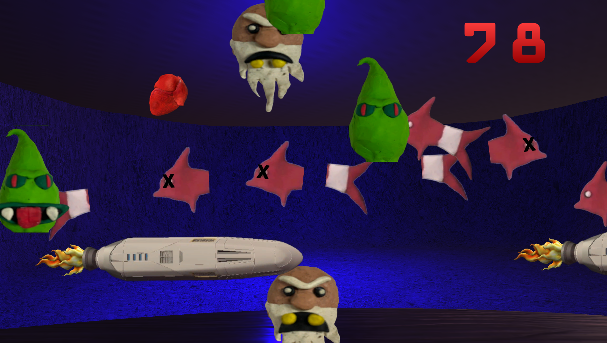

Unity • Arcade Speed Run / Interactive Fiction
Bonus Game Blitz
A timed arcade game that challenges the player to complete the four bonus games in The Alchemist Auction across three levels of difficulty. Obtain limited access to the Completionist Cave while attempting to rack up as high of a score as possible in this epic 15-minute experience!

About the Project
Complete all of the bonus games from The Alchemist Auction as fast as you can! This game includes all three modes (Normal, Expert, and Epic Gamer) of the four bonus games, Matcher, Evader, Slider, and Tracer! If you enjoy this game and want to play more, download the full game of "The Alchemist Auction" to keep the fun going!
Team: Dylan Abry (Lead Designer and Developer)
Gameplay & Media
"Bonus Game Blitz" Gameplay
Gameplay footage of "Bonus Game Blitz". In this clip, I complete one mode of the Slider and Tracer bonus games, receiving the proper cash amount for both of them. The TV displays all of the bonus games with their three modes to be beaten, and will check each off as it's completed.

Evader Bonus Game
My personal favorite bonus game! In this Undertale-inspired minigame, the player uses the cursor to avoid all sorts of projectiles that enter and exit the screen. To win, they must last until the timer runs out witout touching any objects.
What I Built
- Timer System: Since this game is intended to be a speed run challenge, I implemented a timer system that limits the amount of time the player has to complete the three modes of all four bonus games. Depending on the duration of a bonus game, the player will be rewarded with a corresponding amount of extra time added to their total. The timer will pause if the player chooses to pause the game and will continue counting down once they resume. The game will immediately show the player their final score and a "Thanks for Playing" message once the timer hits zero.
- Score Save System: Every mode of each bonus game is programmed to reward the player with a set number of points once completed, depending on how difficult/how long they take to beat. Once time is up, the game will display a "High Score" effect if the player beats the current high score and the new high score will be displayed on the game UI the next time they play the game. Unless the player beats all three modes of every bonus game before time runs out (which is difficult, but possible!), they will always have an opportunity to improve their high score.
- Interactable System: The first-person player is able to interact with surrounding objects, which was achieved using a Raycast from their current position and orientation and Unity's EventSystem library. This enables the player to have full access to the Completionist Cave's bonus games, but excluded access to other interactable features that can only be unlocked by downloading and completing The Alchemist Auction.
Technical Challenges
- Transitioning Between First-Person Controller and UI Cursor Gameplay Modes: Bonus Game Blitz required the player to alternate between first-person exploration and bonus games controlled through interactive UI. I implemented state transitions that disable first-person movement and camera input when entering a UI-driven game, unlock and display the cursor for menu interaction, and then restore the player's controller and camera state when the game ends. Coordinating these input modes prevented both control systems from responding simultaneously and allowed the project to move seamlessly between 3D exploration and cursor-based gameplay.
- Limiting Access of all Completionist Cave Features to Bonus Games Only: The Completionist Cave contains additional interactive features beyond the primary bonus games, but these needed to remain inaccessible during the normal Bonus Game Blitz progression loop. I implemented conditional state checks that distinguish between standard bonus-game interactions and Completionist Cave content, allowing the shared interaction system to determine which objects and features are valid based on the player's current progression and location. This prevented restricted content from being triggered through unintended interaction paths while still allowing the bonus games to function across both contexts.